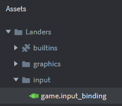
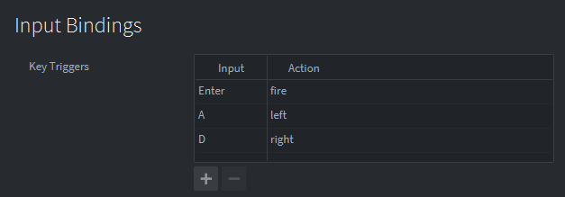
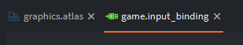

Tutorials for 2D games projects
Landers | Moving the player's ship - setting the key bindings.
From the previous tutorials we learned that getting a sprite to move is a three step process:
- Set input bindings to catch inputs from the player.
- Create the game object.
- Write a script to handle the inputs and change the position of the game object.
Let's start by setting the input bindings.
- In the assets panel in the 'input' folder, double click the 'game.input_binding' file.

Add the following key triggers:

- Save the changes by pressing CTRL-S or 'File', 'Save All'.
- You can close all the open files by clicking the X next to the file name above the editor panel.

We can now create the game object. Stage 2b >
 Craig'n'Dave | Version 1.3
Craig'n'Dave | Version 1.3